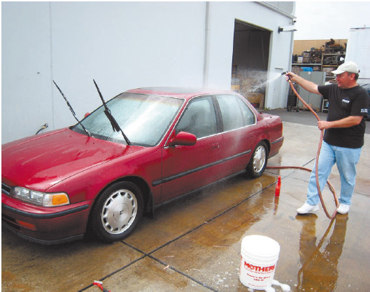
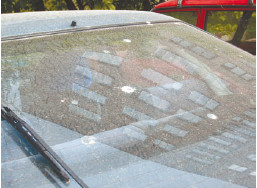
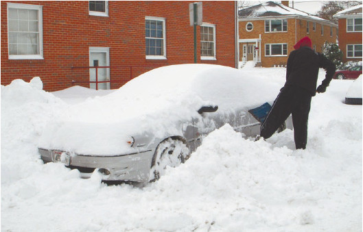

Чистота – залог здоровья
Многие новички, приобретающие автомобиль б/у, да еще и весьма почтенного возраста и малопочтенной марки, склонны к тому, чтобы ухаживать за ним по минимуму.
К уходу относится и регулярное мытье автомобиля (рис. 4.6). Грязь на автомобиле может еще вернее привести к ДТП, чем неуверенная манера вождения. Дело в том, что грязью покрываются не только металлические поверхности, но также стекла и зеркала, то есть то, что необходимо любому водителю для оценки дорожной ситуации.

Рис. 4.6. Осветительные приборы и колеса нуждаются в особенно тщательном мытье
Лобовое стекло, на котором сохраняется радужная пленка от нефтепродуктов (знак плохой отмытости стекла), в сумерки не позволяет адекватно оценить расстояние до объекта, а следовательно, водитель не может выбрать скорость движения, которая наверняка была бы безопасной в конкретной ситуации. Забрызганные грязью зеркала оставляют водителя без бокового обзора, что может привести к столкновению с другим транспортным средством при перестроении на другую полосу.
Но больше всего традиционно страдает заднее стекло. Нередко можно увидеть автомобили, у которых оно покрыто коркой грязи, которая с успехом делает зеркало заднего вида бесполезным (рис. 4.7). То есть водитель вынужден ориентироваться в дорожной обстановке исключительно по виду через лобовое стекло и по боковым зеркалам. Этого явно недостаточно, и ДТП из-за грязного заднего стекла происходят часто (особенно при движении автомобиля задним ходом).

Рис. 4.7. Оценить дорожную обстановку через такое стекло невозможно
Грязные фары и противотуманные фонари – это плохой свет, который не позволяет адекватно оценить дорожную ситуацию в темное время суток, особенно в плохую погоду (дождь, туман, снег). Особенно страдает оценка расстояния до объекта, поэтому наиболее распространенное ДТП из-за плохого света – наезд на пешехода. Чаще всего такие ДТП происходят осенью во время дождей и туманов, когда люди носят неяркую одежду серых и черных тонов. В сумерки такого пешехода даже с хорошим светом автомобиля не так уж просто заметить, ну а если свет плохой, то пешеход обнаруживается уже практически на капоте машины.
Но не только обычная грязь может послужить помехой. Мешает также снег, причем речь идет не только об обледенении зеркал и стекол, но и о сугробах на крыше и капоте автомобиля. Перед тем как куда-либо выезжать, машину нужно тщательно очищать от снега (рис. 4.8). Случается, что ДТП происходит всего лишь по той причине, что во время торможения на лобовое стекло съезжает снег с крыши, полностью перекрывая обзор водителю.

Рис. 4.8. Перед поездкой машину нужно тщательно очистить от снега